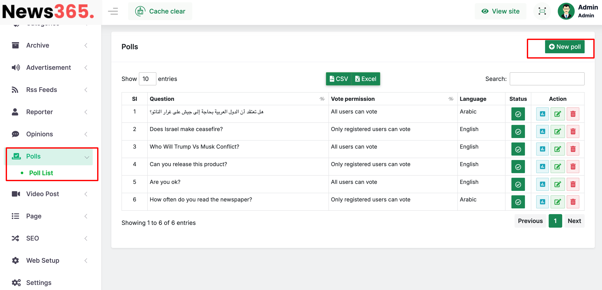
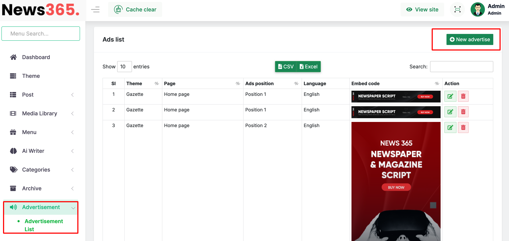

ABOUT News365
News365 is a dynamic software for online news portal. It has a very attractive website. To make your work fast and easy News365 has a user-friendly admin panel. The responsible website of News365 can be browse form any Device.
- Content Management System
- News Stories System
- AI Auto Writing Module
- RSS News Management
- Multiple Themes
- Video News/Post Management
- SETTINGS
- GALLARY
- REPORTER LOGIN
- ADVERLIZEING
- ANALYTICS
- SOCIAL MEADIA SHARING
LANGUAGE & Tools
- HTML/HTML5
- CSS/CSS3
- Tailwind CSS
- PHP-Laravel FRAMEWORK
- Requirement of server :PHP-8.2 or higher
- JavaScript (ES6+)
- Blade Templates
DATABASE
- MYSQL
- Please Extract the news365_main.zip folder. Then you will get news365_main.zip and Documentation Folder, First read the documention.
- Now just Upload the news365_main.zip file to your server using cPanel or FTP.
- Extract the news365_main.zip file
- Now you just access into the your uploaded folder and then move all folders and files (EX: application, assets,index.php,install and system folders) one step up to public_html directory or can create comment folder and then you can keep it at the folder . Note: Keep in mind about .htaccess file is moved correctly otherwise you cannot access into the admin panel.
- You can also check the video tutorial of server installtion of News365 in this link.
- If you are using LINUX Server, you have to make the permission 777 of the following files and folders.
The files and folders are,- All folder and sub-folder in Assets
- All folder and sub-folder in My-assets
- Application
- Application/config
- Application/config/database.php
- Application/ci_sessions
- Application/cache
- System/core
- System/core/compat
- System/core/compat/lic.php
- You can also check the video tutorial of installtion in Linux server, is this link. #####################
- Note that: the instruction will be applicable for all other system. #####################
- You have to create a database and user(if not exixt) from MySQL Database in your cpanel. And Add the database with the user.
- Now, Browse your application http://yourdomain.com/install If all requirements successfully meet then click on Next button.And also check Purchase key at your envato Download option : https://themeforest.net/downloads
- Installer second step showing the directory and server requirements.and SMTP server.Try to make everything ok,initially SMTP if not enable it will work but for email sending you must setup your serer later otherwise email will not delivere.But you can install the application now.
- *Enter your database name, username, password, host name and click on Next button
- Then wait for 30 Second. Now insert you email address and a Strong password. Click Next
- All set.Installation successfully done.The Application is ready to use. Now just click to launch the application
- Thank you for purchasing the News365, If you have any questions, please contact us at info@bdtask.com
- Enable or disable user login and registration.
- Toggle comment system availability for users.
- First, create roles like Reporter, News Editor, Moderator, etc.
- Assign specific permissions to each role.
- Then, assign users to these roles. Each user will only get access to the modules permitted for their assigned role.
- A few Google Fonts are pre-installed.
- You can add any font by providing:
- Font URL
- Font family name
- Once added, fonts can be assigned to:
- Header
- Main content
- Default font for the rest of the application
- This affects both backend and frontend content.
- Add new languages via Settings > Language Setup.
- Use the translation option to translate phrases manually or upload via CSV/Excel (bulk upload supported).
- Login timestamps
- User activities
- IP address and access history
- Supports multi-language homepage customization.
- To assign posts:
- Navigate to Web Setup > Home Page
- Select Language → Position Number (1–9) → Category
- The chosen category's posts will appear in the corresponding block.
- Go to Categories > Category List > New Category
- Define:
- Category Name
- URL Slug
- SEO title, keywords, and meta description
- Main Menu (Header)
- Footer Menu 1
- Footer Menu 2
- Main Footer Menu
- Go to Menu > Menu List
- Select the menu type (e.g., Main Menu)
- Use the Action button to add items from:
- Categories
- Custom Pages
- External Links
- Drag and drop to reorder
- To add submenus, click the edit icon and choose a Parent Menu
- Go to AI Writer > AI Settings
- Enter:
- OpenAI API Key
- Model (e.g., GPT-4)
- Temperature & Max Tokens
- Once setup, AI Writer will be available in the post editor.
- Regular Post
- Photo Story Post
- Breaking News
- Video Post
- Opinion Post
- Go to Post > Add Post
- Choose:
- Post Language
- Category & Subcategory
- Category Position (display order)
- Home Position (homepage slider position)
- Set:
- Release Date
- Short Headline
- Main Headline
- Use the content editor or AI Writer
- Additional Options:
- Add main image
- Define SEO metadata
- Add reporter/writer name
- Display in Featured, Recommended, or Breaking News
- Click Save to save the draft
- Go to Post List to click Publish
- Add YouTube link
- Custom thumbnail
- Optional rich text content
- Collect RSS feed URL
- Go to RSS Feeds > External RSS Feeds
- Click Add New
- There are 6 themes in News365. To change theme just go to Themes Option and select prefered theme to active.
- Archive is a very important part for every news portal. To find the archive of News365 just go to Archive Setting.
- You will find Reporter List in Users > Reporter.
- To find the Subscribers list just go to Users > subscribers.
- To manage your advertizement just go to Advertizement Module. You can add new advertizement from here, ads casn be served two ways. first of all we can publish image based ads or third-party scripting ads such google ads.
- To SEO setup for the home pagae SEO> SEO Settings> And we will add seo meta title, descreption and other info.Also we can add google analytics code ID from here to connect the google analytics with this application.
- If we want to update social link for the frontend we have to SEO > Social Link option then we will able to change social media profile url
- If we want to get the website sitemap url to use search consol purpose then we have to come SEO > sitemap option then we will able to get sitemap options. sitemap will be autmatically generated and no need to do any custom work. this sitemap format already tested with search consol platforms.


1. Application Configuration
General Settings
This section covers all basic frontend and backend setup options:
Logo Setup: Upload separate logos for frontend and backend, including dark mode and light mode variants.
Favicon & Footer Background: Set the favicon for the web application and choose a background image for file directories.
Language Option: Enable the default language from this part of the settings.
User Access Control:
2. Authentication & API Setup
🔗 Social API Setup
This software supports social login through Google (Gmail) and Facebook.
To enable these, add your own social platform API credentials (Client ID and Secret) in this section.
This is required for login with third-party accounts.
Mail Setup (SMTP)
Aside from social login, the application supports standard email-based registration.
To enable email verification, configure your SMTP settings here.
Enter your mail server info: SMTP host, port, username, and password.
3. AWS S3 Cloud Storage Integration
Space Credential Setup
The application integrates with Amazon S3 for large-scale image storage.
Go to Settings > Space Credential
Add your AWS S3 credentials to enable seamless image uploads and storage.
4. User & Role Management
Multiple Admins & Role Permissions
This section allows managing multiple admin users:
5. Fonts & Language Management
Font Settings
To customize the typography of your application:
Language Setup
The application supports multiple languages:

6. Backup & Access Logs
Backup
Navigate to Settings > Backup Reset to take and manage application backups.
Access Log
Go to Settings > Access Log to track:
7. Frontend / Homepage Setup
Homepage Post Blocks
The homepage is organized using 9 predefined post blocks:
Note: If you have more than 9 categories, the application has a default dynamic block that will automatically display the remaining posts in first-in, first-show order after block 9.
Add New Category
To create a new category:

8. Menu Configuration
The application supports 4 types of menus:
Menu Management
9. AI Writer Setup
This software includes an AI writing feature using OpenAI.
Enabling AI Content Writing
10. Post Management
The software supports 5 post types:
Add New Post (Detailed)
To publish a post:
Breaking News
Use this to post brief updates without full content. Displayed in the breaking news ticker on frontend.
Story Post (Photo-Only)
Go to Post > Story Manage > New Story. Upload image-only news stories, styled like social media.
Video News Post
Go to Video Post > Add Video Post

These posts appear in a dedicated video block on the frontend.
Opinion Post
Opinion content has its own section. Go to Opinions > Opinion List > Add New.
Comment Management
Go to Post > Post Comment. Approve, reject, or delete user comments easily.
11. Poll Management
Go to Polls > Poll List > New Poll. Create public polls to gather audience feedback.

12. RSS Feed Integration
Internal RSS
Share your site's content with external platforms. Multi-language supported.
External RSS
Import content from other sites via RSS.

Bdtask, Inc. has a global reputation for up to scratch customer experience which marks us as one of the best software development companies in the world. Bdtask
If you Need to know anything about News365, please do not hesitate to ask our support team.
We have a rich blog where you will get different types of content along with our software related contents and varies technical and business related content. visit here